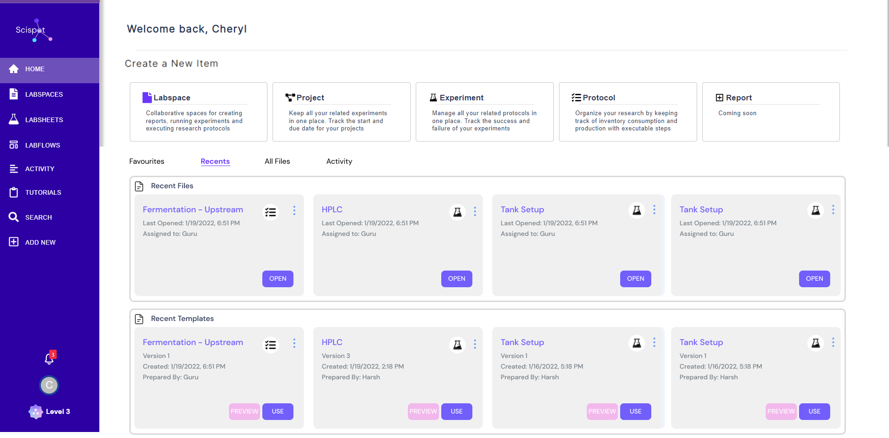
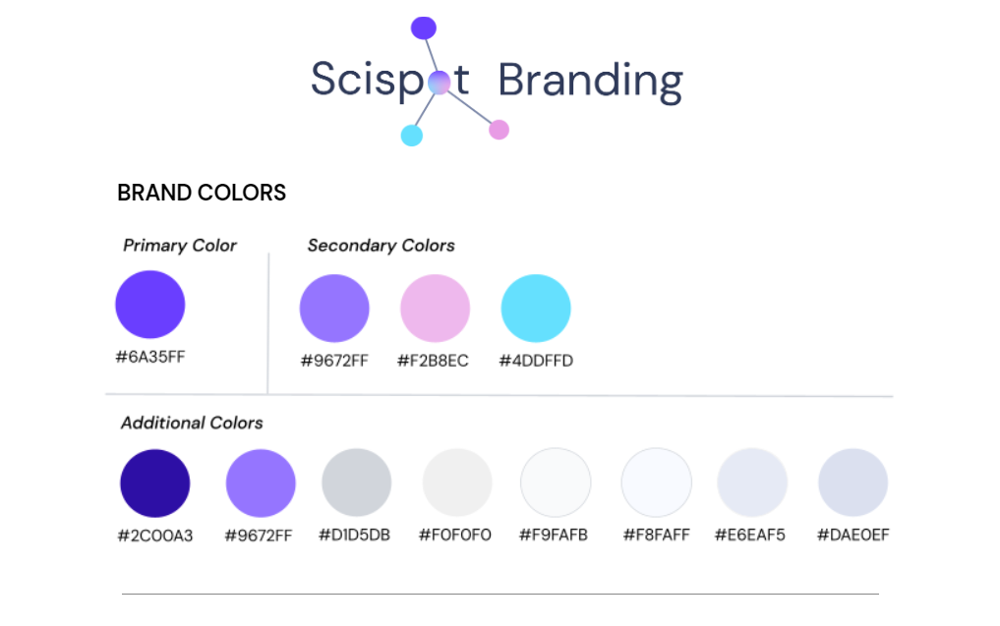
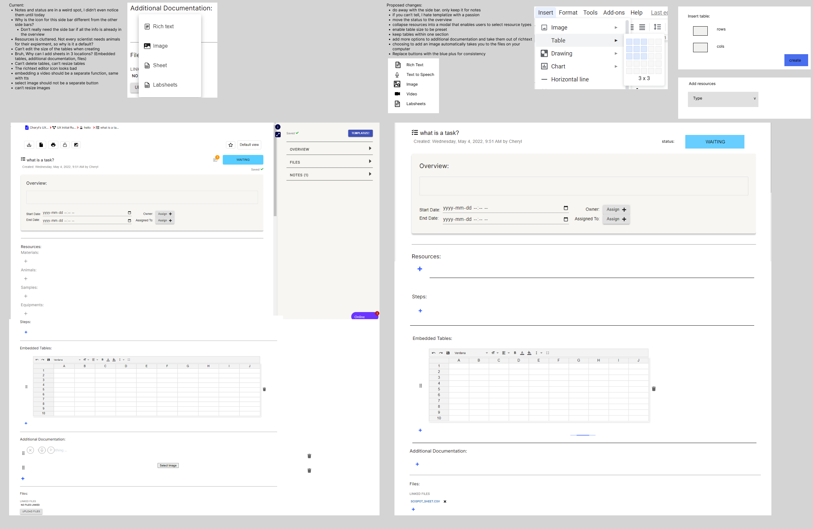
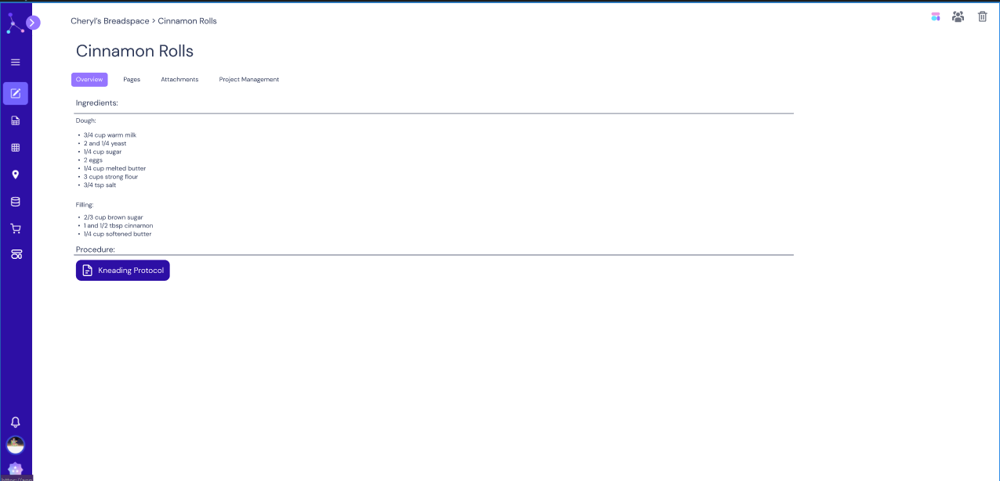
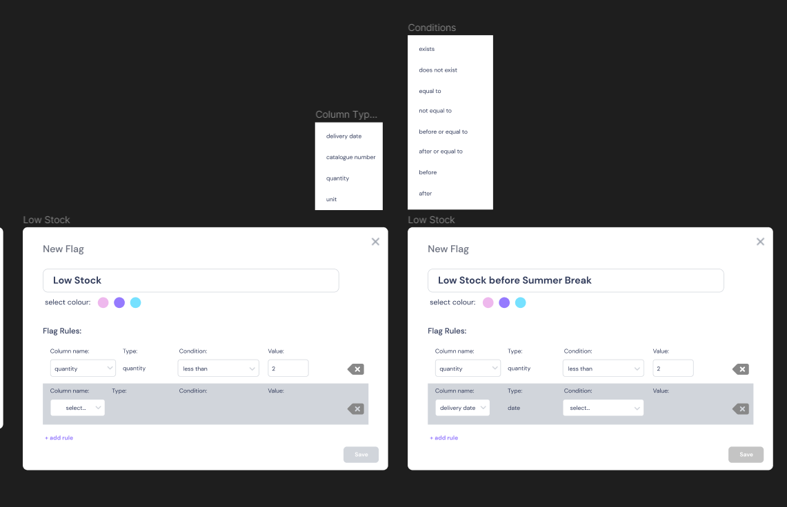
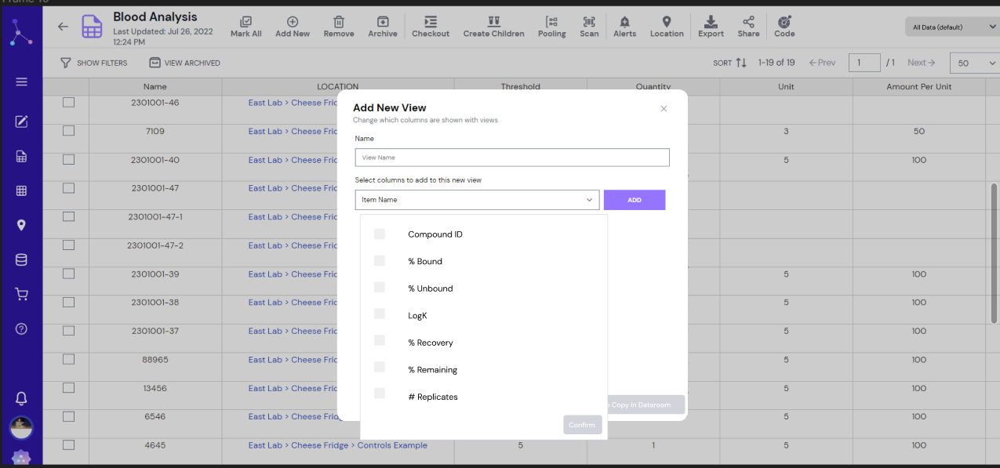
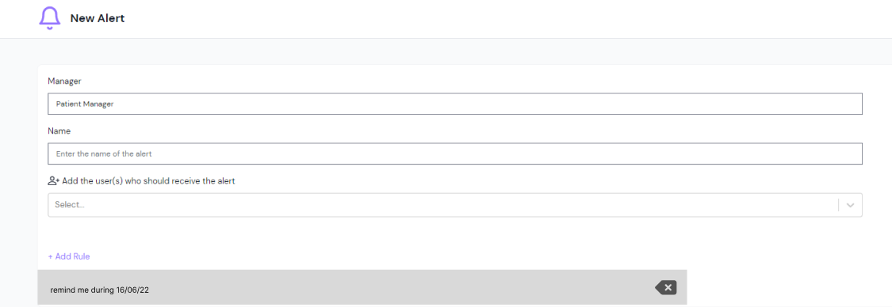
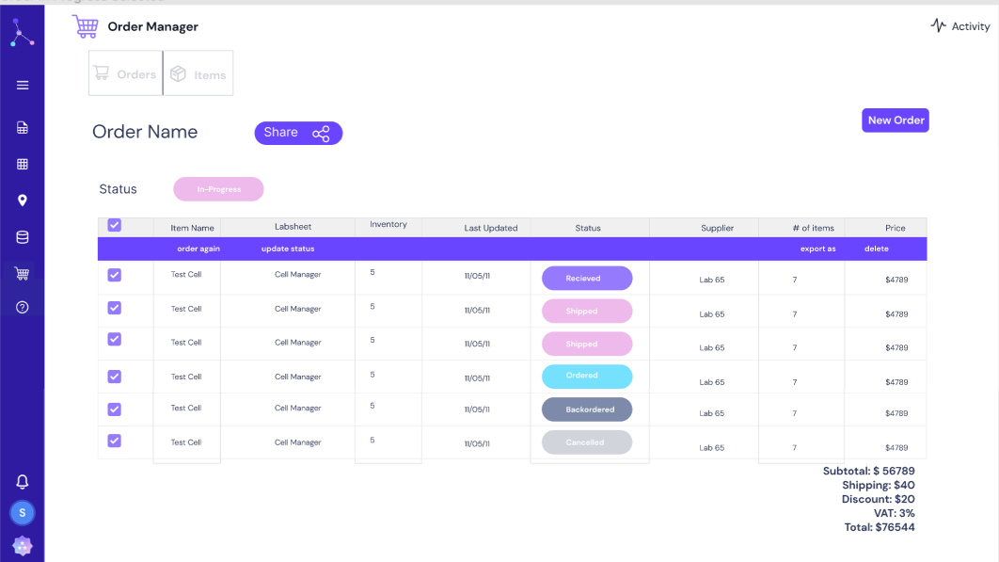
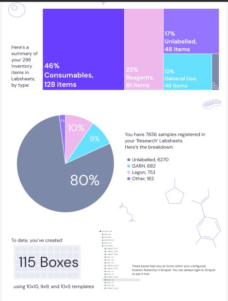
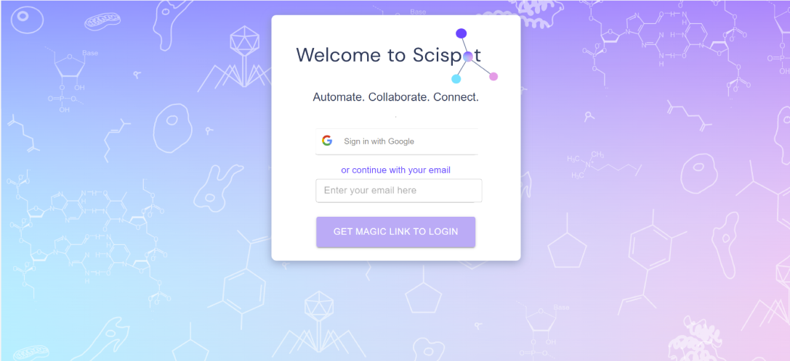

What is Scispot?
Scispot is an electronic lab notebook (ELN) and lab management platform for biotech and life science teams. Think of it as Notion except for lab scientists to record experiments, manage inventory, track orders, collaborate with collaborators outside the org, and run their entire lab operations without switching between a dozen tools.
When I joined, the core product existed but was expanding fast. I was brought in to design new features and improve existing ones, but without a design manager, without a design system, and often without a full brief. The expectation was that I could go from nothing to Figma handoff.

What "sole designer" actually meant
This wasn't a "junior designer follows a design system" kind of role. There was no senior designer to review my work, no existing component library to pull from, and new feature requests came in constantly. My day-to-day looked like:
- Stakeholder interviews: understanding what clients were asking for and translating vague requests into design problems worth solving
- Competitive analysis: benchmarking against Benchling, Labguru, and other ELN tools to understand where Scispot sat in the market
- Wireframing → high-fidelity prototyping in Figma, from scratch each time
- Engineering handoff: writing specs, managing tickets, coordinating directly with developers and the client success team
- Metrics tracking: defining success metrics for each feature before it shipped and reviewing adoption data post-launch
🎨 Design scope
- End-to-end feature design (brief → handoff)
- Figma prototyping at multiple fidelities
- Rebranding: applying new style guide across product
- Data visualisation templates for usage reports
🤝 Cross-functional work
- Directly interviewed enterprise clients for requirements
- Coordinated with engineering in Jira
- Working with engineering to assess feasbility
- Worked with marketing to communicate new features
- Collaborated with client success on onboarding flows
First: getting the brand right
Before designing new features, I needed to understand the visual language. One of my responsibilities was ensuring the entire product adhered to the new style guide consistently. Every screen, every component.

The visual language (clean whites with electric purple accents, molecular iconography, and a light clinical feel) had to stay coherent across every new feature I designed. This also meant updating existing screens that hadn't been updated during the rebrand.
The projects: what they were and why they mattered
Each project started differently. Some came from client requests, some from internal pain points, one directly secured a client contract. Here's the full breakdown.
Datarooms
A system for sharing lab documents securely outside the org. Covered sharing permissions, updated layouts, user management for documents, and all interface states.
Lab Materials Manager
Redesigned the information architecture of the digital storage tool to handle complex multi-level storage hierarchies. For fridges inside labs inside buildings.
Equipment Checkout
Prototyped an equipment management and checkout system. This prototype secured a contract with a large prospective client before the feature was fully built.
Inventory Management
Linked the lab notebook with Labsheets so scientists could update inventory in real time without switching tools. Reduced double-entry and manual sync errors.
Training Modules
A new product within Scispot: required training modules, a permissions system for assigning modules by role, and a tracking system for completion.
Database Integration
Designed user flows in Figma for connecting Google Sheets and S3 directly into Scispot, enabling labs to bring in their existing data without migration headaches.
Landing & Signup
Wireframed and designed the user flows for getting new labs onto the ELN. Clear, low-friction, and designed to surface value as fast as possible.
Rebranding
Applied the updated brand style guide across the entire application, ensuring every screen, modal, and component reflected the new visual language consistently.
Labsheet Filters & Flags
Designed conditional filtering and colour-coded flagging logic for Scispot's in-app spreadsheet system. Let users create custom alert rules based on column values.
Alerts Redesign
Redesigned the alert system so notifications were role-relevant rather than a broadcast firehose. Users now only see alerts relevant to their specific tasks.
Usage Reports
Created data visualisation templates that let clients see their own Scispot usage: inventory summaries, sample counts, and box creation stats at a glance.
Request Manager
A structured system for cross-team lab requests: requestors, requestees, approvers, to-do tracking, file attachments, and an activity log all in one view. Secured a new major client contract.
Three projects worth zooming in on
The Electronic Lab Notebook: making protocols usable
The core ELN product let scientists document experiments, but the existing interface had usability issues that kept coming up in research sessions. The sidebar was cluttered with items that didn't make sense in context. The resource system was hard to navigate. Tables couldn't be resized. The rich text editor felt bolted on.
"Why can I add sheets in 3 locations?" was the exact kind of feedback that kicked off this project. When users are confused about basic navigation, you don't have a feature problem. You have an information architecture problem.

My approach: document every complaint from user sessions, categorise them by severity, and work through them systematically. The new ELN design consolidated the sidebar, moved status to the overview, made tables resizable, and introduced a cleaner resource modal.

Labsheet Filters & Flags: conditional logic for non-developers
Scispot's Labsheets are essentially a specialised spreadsheet for lab data (samples, inventory, reagents, results). Scientists needed a way to flag rows based on conditions, like "flag anything where quantity is less than 2" or "flag items expiring before summer break." The catch: the users building these rules are scientists, not engineers.
The design challenge was making conditional logic feel intuitive, like when you're booking a hotel online. Finding column name, type, condition, and values without exposing the underlying technical complexity. I also needed to design the full filter view that let users switch between different filtered perspectives on the same labsheet.


Alerts & Request Manager
The existing alert system sent notifications to everyone regardless of role. A researcher would get alerts about inventory thresholds in a lab they never touched. A manager would get notified about every minor status change. The result: people stopped reading alerts entirely.
The redesign introduced role-scoped alerts: users only receive notifications relevant to their specific manager context. I introduced a new rule builder that let admins define when and who gets notified.

The Request Manager tackled a different collaboration problem: cross-team lab requests had no formal system. Scientists would request samples or experiments from other labs via email or Slack with no tracking, no accountability, and no paper trail.

Order Manager, Reports & Templates
Lab procurement was another manual nightmare. Orders tracked in spreadsheets, no status visibility, no connection to inventory. The Order Manager gave labs a structured place to create orders, track item status (received, shipped, ordered, backordered, cancelled), and get a live subtotal with shipping and VAT.



The front door: login and first impressions
The login experience is small but signals everything about a product's character. The updated login screen kept it clean and focused — Scispot branding, Google sign-in prominently offered, email magic link as the fallback. The molecular illustration background reinforces the scientific identity without overwhelming the form.

What I learned doing this alone
✦ Constraints force focus
With 12 features and one designer, I had to develop a ruthless sense of what was worth spending time on. Good enough and shipped beats perfect and not. I learned to prototype at the fidelity that answers the question, not the fidelity that looks impressive.
✦ Talk to the people touching the product
The most useful input didn't come from product briefs. It came from client success calls, engineering conversations, and watching scientists actually use the product. Information architecture problems look obvious in user sessions. They're invisible in Figma.
✦ Define success before you design
I started defining success metrics for each feature before I started wireframing. This changed how I thought about tradeoffs: not "which version looks better" but "which version is more likely to move the number we care about."
✦ Solo doesn't mean isolated
Being the only designer doesn't mean designing in isolation. I treated engineers as design collaborators, made sure client success understood the rationale behind changes, and kept marketing looped in on what was shipping.